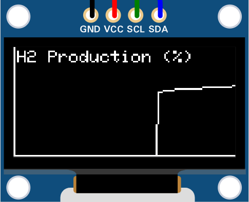

Results & Demonstration
The final system successfully demonstrates the capability of the quantum-inspired algorithm to process hybrid inputs and generate stable, probabilistic forecasts. The dual-OLED setup provides a comprehensive Human-Machine Interface (HMI) for real-time monitoring.
OLED 1: Status Monitor

Real-time inputs and forecast status with bar graphs.
OLED 2: Live Trend Graph

Live scrolling graph of H2 production potential over time.
The RGB LED complements these displays, providing immediate, at-a-glance feedback of the forecast state, changing color smoothly as predictions shift based on the probabilistic model.